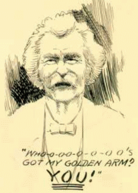

Recollections of MT Speaking

[House], "MT as a Lecturer" (1867)
Susy "Reviews" Her Father (1885)
[R.C.B.], "MT on the Platform" (1895)
William Clemens, "MT on the Platform" (1900)
J.B. Pond,
Eccentricities of Genius
(1902)
Howells Remembers His Friend (1910)
Vale, "MT as Orator" (1910)
"MT as a Reader" -- of Browning (1910)